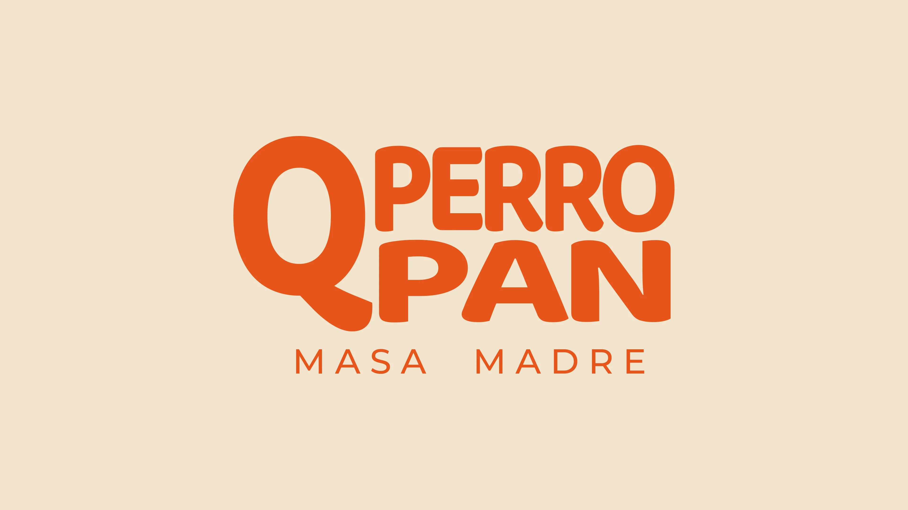
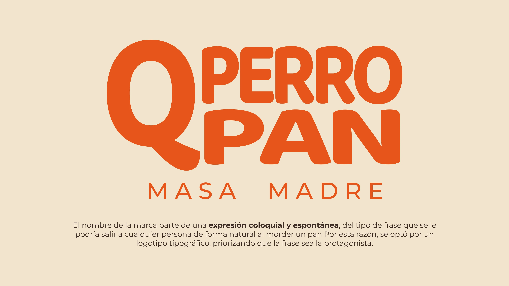
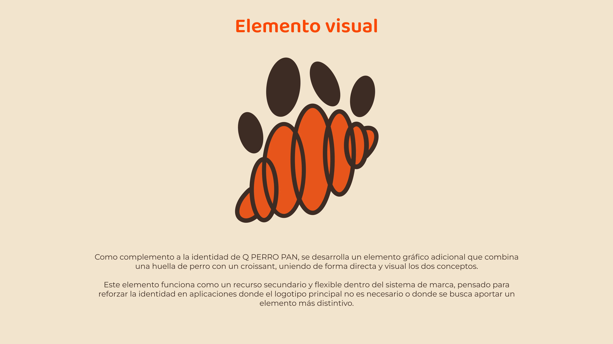
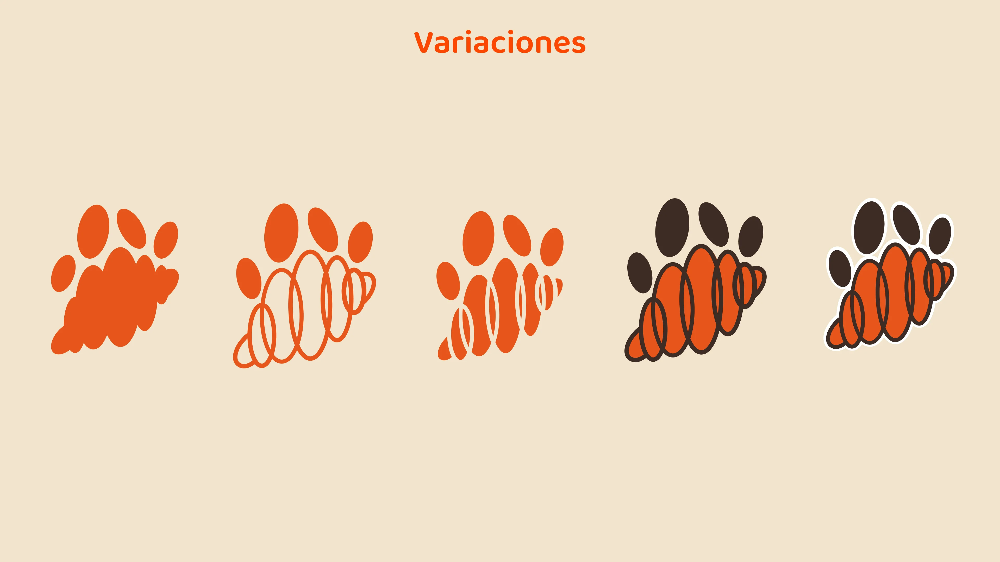
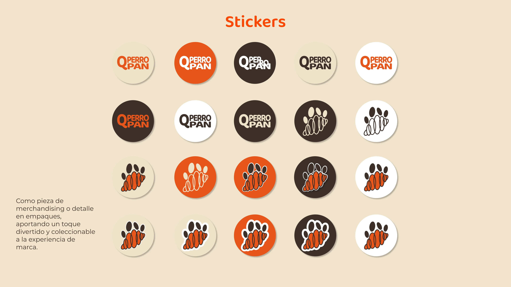
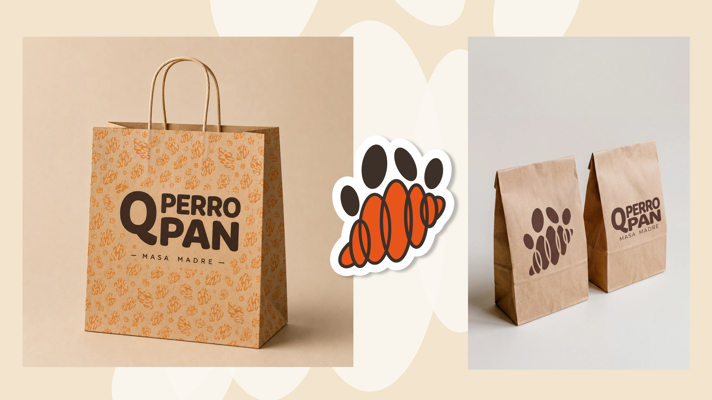
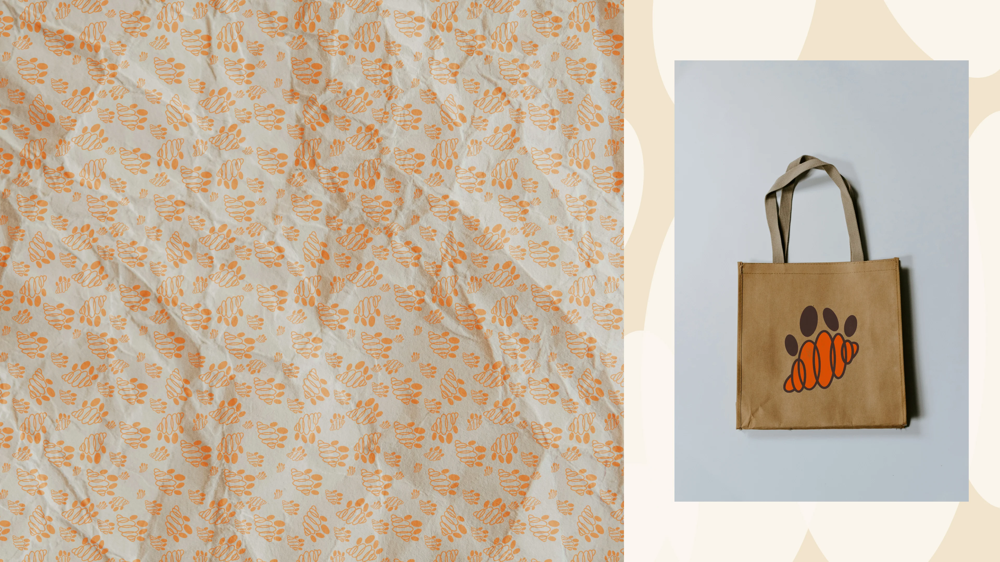
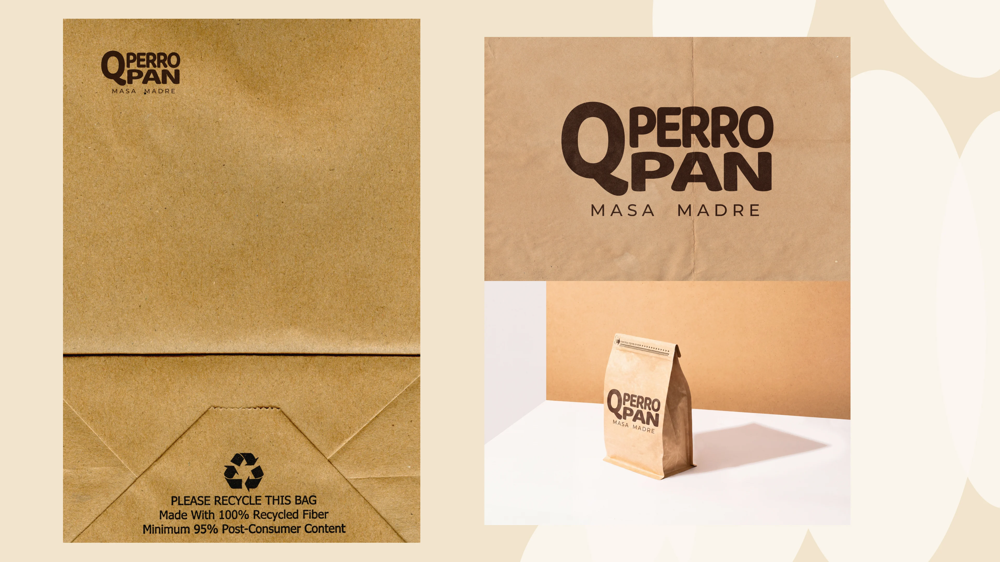

Q PERRO PAN
Q PERRO PAN is a sourdough bakery focused on quality bread and good ingredients. The identity was designed to reflect the warmth and handcrafted nature of sourdough while adding a playful and approachable personality. The visual identity uses a vibrant orange as its accent color, moving away from the more traditional palettes commonly seen in bakeries.







